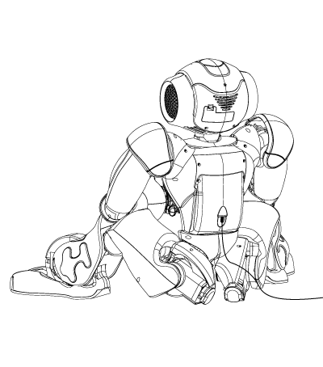
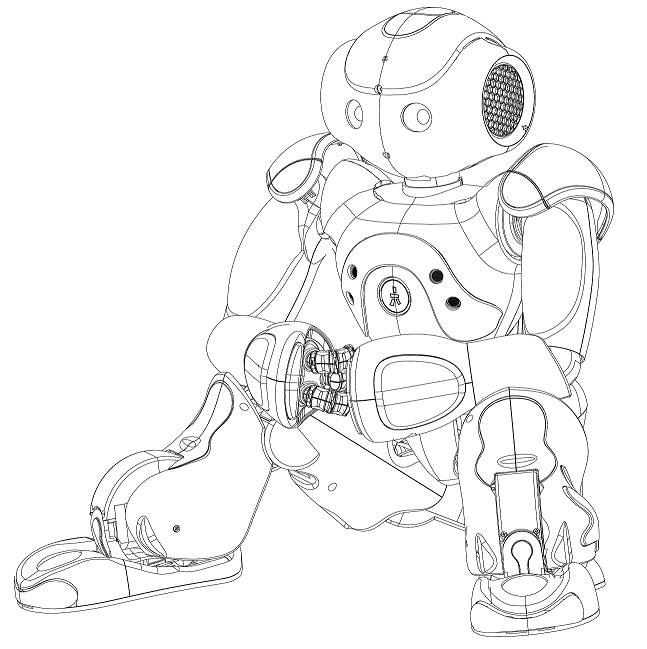
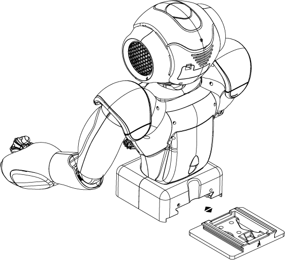
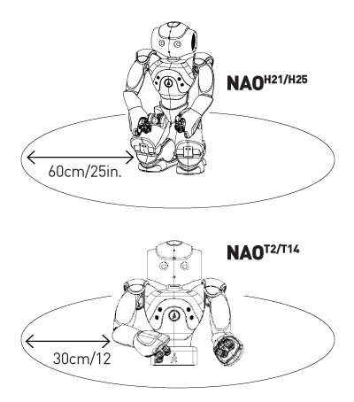

Best practices¶
Charging NAO¶
Plug the adaptor into NAO‘s back while he’s in a stable position and leave him to charge for at least 2 hours. He should not walk or lie down while charging.
Ethernet cable¶
When plugged into Ethernet, NAO should not walk, lie down or perform behaviors which could move his head too far (particularly tilting his head back), as the plug could damage his head. The WiFi connection is the recommended connection.
Hands¶
Avoid playing with NAO‘s fingers and rotating his hands when turned off.
Safe Poses¶
NAO needs to be in a stable position when he’s not in use or while charging, like in this picture.
NAO H21/H25¶
NAO T2/T14¶
Fix NAO‘s base onto a horizontal surface with 4 screws.
Safe Area¶
You should prevent NAO from falling. Yet if he falls, he should not hurt any object or fall from a high surface, such as a table. A safe working area is shown in the figures opposite.
The way you position NAO is also important to prevent NAO from falling or hurting himself. Place him in a stable position when pressing his chest button, or when plugging a cable. before starting a move, make sure he can perform it from his current position.
When turned off, the best position is to have NAO lying down on his back, with no cable plugged.
Recommendations¶
- Precautions: take all necessary precautions to ensure that NAO will not be directly or indirectly damaged by its surroundings. Do not exert strong forces on NAO and protect it from falls. Do not make NAO walk on thick carpets or rugs, mattresses, clothes. NAO will move about properly if the floor is flat, hard and smooth. Do not block its sensors or introduce foreign objects into its body. Do not use NAO outdoors.
- Handling: if you need to handle or move NAO, it is best to hold it with both hands by the waist/torso. Do not pull it by the arms, legs or head.
- Water: do not expose NAO to any form of water as permanent damage may occur. In particular, if NAO switches from a cold environment to a warm one, condensation may occur on its surface or inside. In that case, let NAO dry before turning it on.
- Temperature: NAO is designed to function between 10 and 35 °C ( 50-95 F).
- Humidity: NAO is designed to function within 10% to 90% relative humidity.
- Electrical shock: do not attempt to disassemble or modify NAO, as this can cause malfunction/damage or result in electrical shock.
- Children and pets: do not let children or pets interact with NAO.
- Storage: when not intending to use NAO for a long time, remove the battery and store it in a dry location, at temperatures between 0 and 45 °C (32- 113 F). Be aware that during storage, the battery will be subject to discharge. Also bear in mind that the charge capacity of the battery will decrease in time.
- Transport: the robot must always be transported in its original packing or in a specific suitcase sold by SoftBank Robotics. Any other packing may damage the robot and void the warranty.
- Battery handling: do not expose the battery to temperatures above 45 °C (113°F). Protect the battery terminals from dust or foreign objects.
- Cleaning: clean NAO and charger with a soft, dry cloth only. Do not use solvents.
- Do not oil NAO‘s joints or other movable parts.
- Lithium-ion rechargeable batteries are recyclable. You can help preserve our environment by returning your used rechargeable battery to the collection and recycling location nearest you.
- For information regarding the AC adapter, please refer to the manual provided separately.
Safety¶
- Periodically examine the AC adapter for conditions that may result in the risk of fire, electric shock, or injury to persons (such as damage to the cords, blades, housing). In the event of such conditions, the AC adapter should not be used until properly replaced.
- The robot must be used only with the recommended AC adapter and battery. Use of another type of adapter and/or battery may result in malfunction and voids the warranty.
- If the external flexible cable or cord is damaged, it must be replaced or repaired only by the manufacturer, an authorized service agent or a similar qualified person in order to avoid a hazard.
- All material for fastening or packing purposes are not part of the robot and should be disregarded for children’s safety.
- Do not handle damaged or leaking lithium ion batteries.
- There is a risk of explosion if the battery is incorrectly replaced. Replace only with an Aldebaran battery. Discard used batteries according to the manufacturer’s instructions.
- The battery pack used in this device may present a fire or chemical burn hazard if mistreated. Do not disassemble, heat above 60 °C (140 °F ) or incinerate. Dispose of used battery promptly. Keep away from children. Do not disassemble and do not dispose of in fire.
- Do not drop the battery pack or place heavy object on it. Do not apply strong pressure or physical shock to the battery pack.
- In case of troubles with your electrical power circuit, immediately unplug NAO‘s charger.